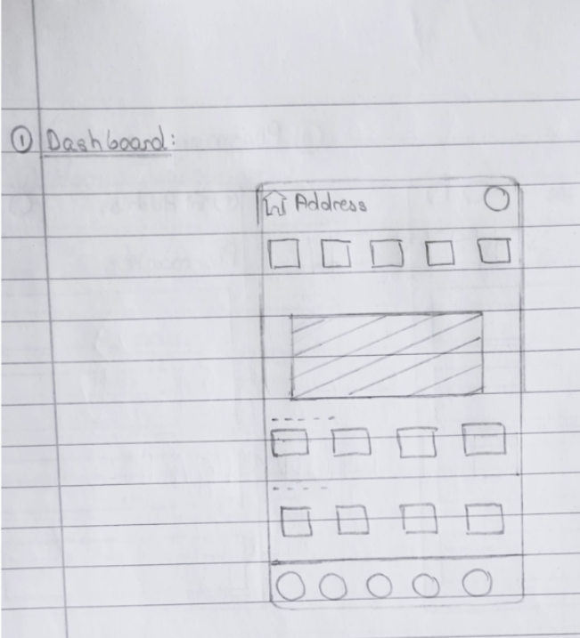
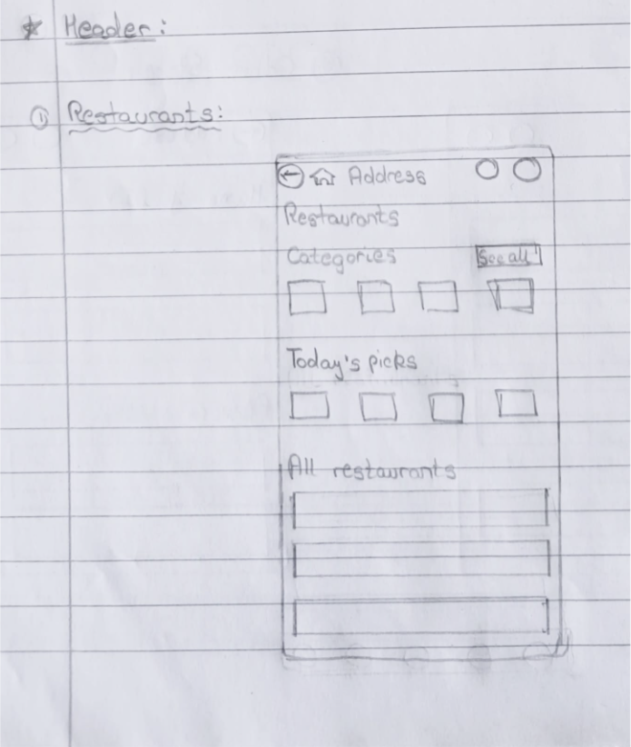
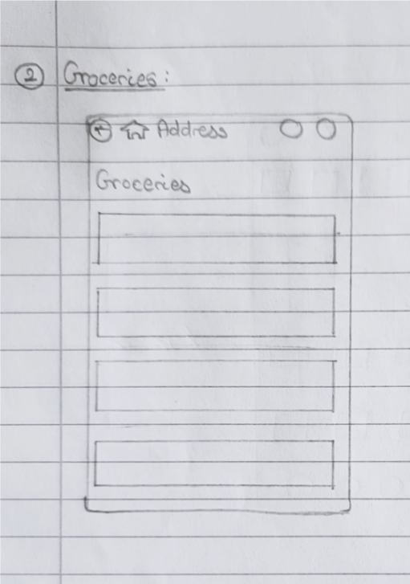
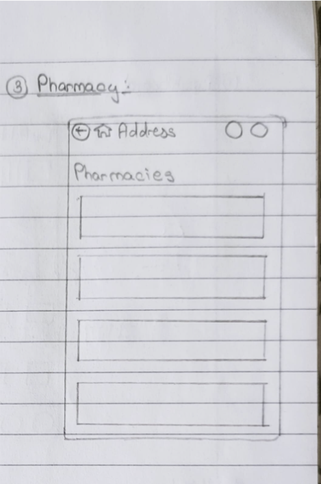
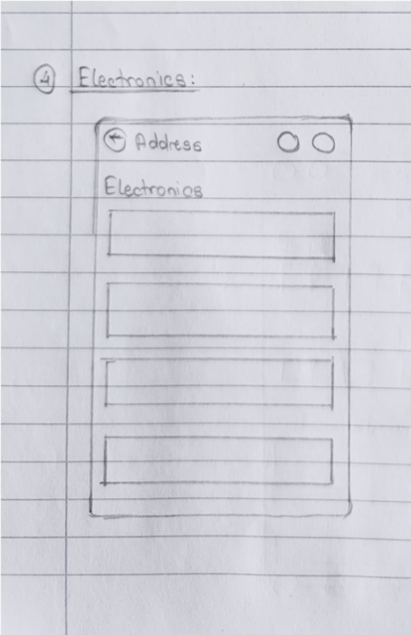
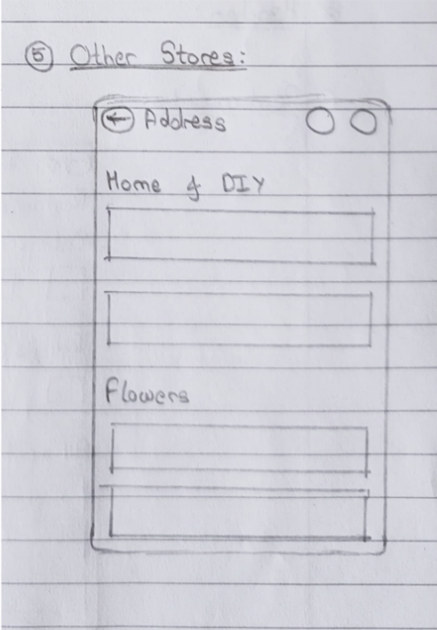
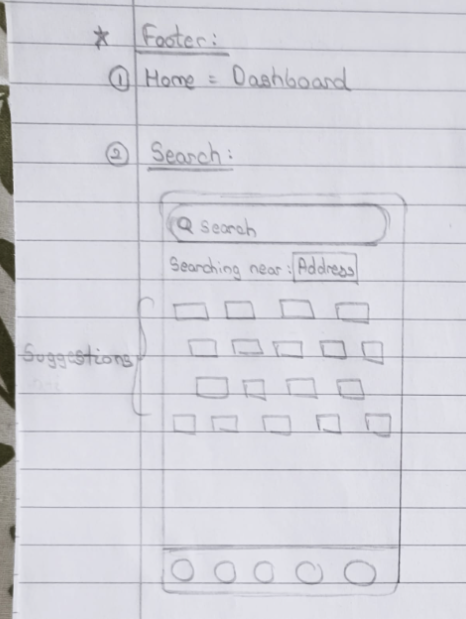
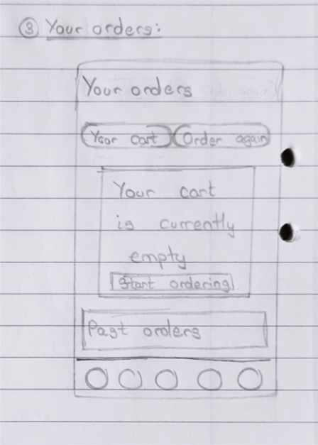
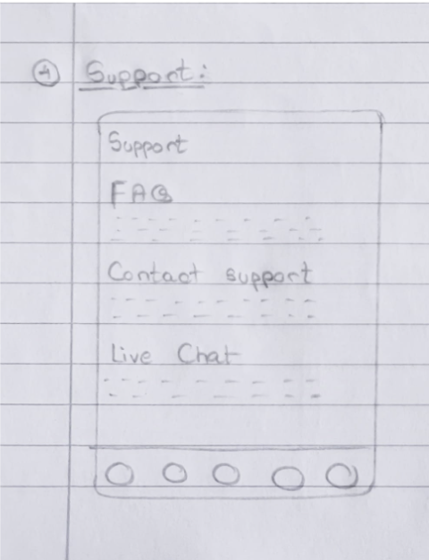
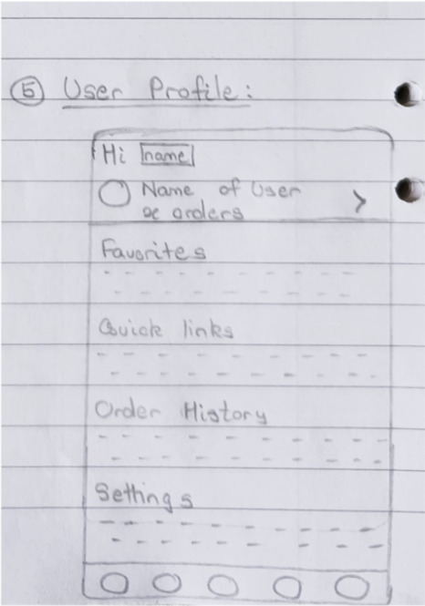

Food delivery apps promise convenience, but most of them make you work for it. When I started this project, I kept coming back to one question: why does ordering dinner still feel like filling out a form? I wanted to design something for people who are hungry now — students between classes, professionals grabbing lunch on a 20-minute break, parents ordering with a toddler on their hip — where speed and clarity weren't afterthoughts, they were the whole design brief.
I leaned on a standard design thinking loop — empathize, define, ideate, prototype, test — but the honest version of that is: talk to real people, get surprised by what they say, sketch fast, show it to someone, get told I was wrong about something, fix it. Repeat. The framework is the scaffolding; the actual work is the back-and-forth with users.
I interviewed 8 people across three groups — students, working professionals, and parents — because I suspected their frustrations would be different, and they were. Students cared most about price transparency (no one likes a surprise delivery fee at checkout). Professionals wanted speed and minimal taps. Parents wanted to reorder past meals without re-navigating the whole menu.
Across all three groups, the same three complaints kept surfacing: checkout forms that felt longer than they needed to be, pricing that wasn't clear until the very last screen, and delivery tracking that left people guessing. I also spent time in Uber Eats and DoorDash to see how they'd already solved (or hadn't solved) these problems — not to copy them, but to understand what "normal" felt like so I'd know where I could actually improve on it.
I started on paper, deliberately ugly — grayscale boxes, no color, no fonts worth mentioning. The point wasn't to make it look good, it was to force myself to answer "does this screen need to exist, and does it need everything on it?" for Home, Menu Listing, Product Details, Cart, and Order Tracking.
A few decisions came directly out of this stage: CTA buttons needed to be impossible to miss (my testers kept losing them in early sketches), tab navigation made more sense than a hamburger menu for a task this frequent, and anything non-essential got collapsed into an expandable section instead of competing for space on the main screen.










Once the bones worked, I moved into Figma and started making it look like something you'd actually want to open. Brand colors, micro-interactions on things like adding an item to cart, transitions between ordering and tracking — small moments that make an app feel alive instead of static. I also went back and checked contrast ratios, tap target sizes, and screen reader labels, because an interface that only works for some people isn't actually done.
View Full Prototype →I tested the interactive prototype with 5 participants over screen share, giving them real tasks like "order a vegan lunch combo" and "track your order after checkout." Most people got through both without help, which was reassuring, but two specific things broke: the filter button was in a spot people didn't expect, and a couple of the delivery-status icons meant nothing without a label next to them. That second one stuck with me — I'd fallen into the classic trap of designing an icon that made sense to me because I'd stared at it for hours, not to someone seeing it for the first time.
I fixed what testing exposed: added text labels next to the icons that were confusing people, simplified the filter into something more discoverable, added a progress bar during checkout so people could see how many steps were left, and built a persistent order-status widget so tracking wasn't buried in its own screen. I also went back and designed for the messy cases — failed payments, out-of-stock items — because a prototype that only works when everything goes right isn't really tested.
What I ended up with wasn't just "prettier" than where I started; it was a checkout flow with fewer decision points, tracking that answers questions before users have to ask them, and an interface that held up when I put it in front of people who weren't me.